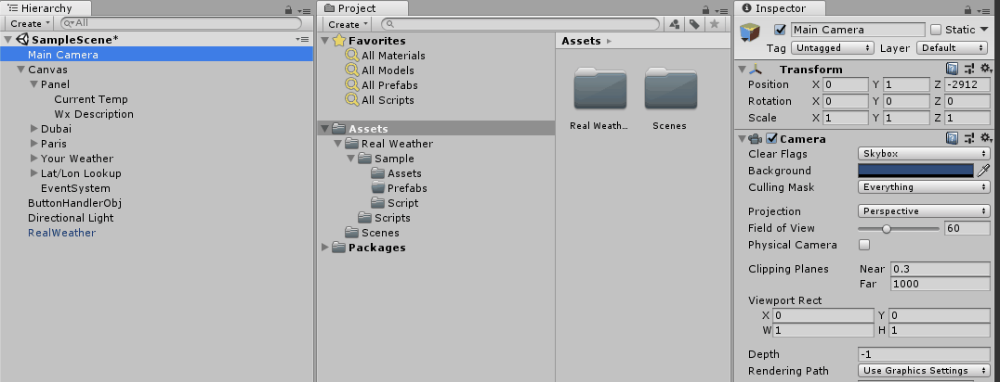

Getting Started
Using the Real Weather system follows these easy steps:- Install the asset from the Asset Store
- Get a free weather API key
- Drag the RealWeather pre-fab to your scene
- Enter your API key in to the prefab
- Start using the Real Weather system via code or from properties in the inspector
- Optionally you can get a free API key to lookup location by IP address. More info below.
Getting the weather API key
The first step for weather or location lookup are to get your free API keys. You will want to go to the OpenWeatherMap API page to sign-up for a FREE key. If you want some of the features of the other non-free plans those API keys will still work but are not required for your application to get real weather.
Get API key here: https://openweathermap.org/api
The API key will generally be emailed to you within minutes but could take up to two hours to become fully active. If you are getting access denied errors from the API ensure that you have waited two hours for it to become active.
Add the prefab to your scene
Next drag and drop the prefab which contains all of the weather logic.
Add your API key
Enter your OpenWeatherMap API key in to the property field.
Start getting weather
At this point you're ready to start getting real weather for your application. You have two options for getting the weather data. The first is to access it via code and utilize the both simple and fully featured API. The full API docs can be found here.
Here are some examples of how to access via source code. All of these assume you have set your instance of wx to the prefab instance you put in your scene. They also all pass in a callback function called updateWeather. The last example shows and example of how you could implenent the updateWeather callback. Generally this callback will be where you update your UI or other code.
// Getting weather by city name.
public RealWeather wx;
wx.getWeatherFromCityName("Paris", "FR", updateWeather);
// Getting weather from lat/lon.
public RealWeather wx;
wx.getWeatherFromLatLon(40.8221f, 140.7474f, updateWeather);
// Getting weather from a zip code.
public RealWeather wx;
wx.getWeatherFromZip("90210", "US", updateWeather);
// Getting weather from the users location.
public RealWeather wx;
public void getUsersLocalWeather() {
wx.getWeatherFromLatLon(40.8221f, 140.7474f, updateWeather);
}
public void updateWeather(WeatherData wxData) {
Debug.Log("Temp = " + wxData.currentTempF + "°F / " + wxData.currentTempC + "°C");
}
Using the object properties
The following is a screenshot of the RealWeather inspector after a call has been made to get the users weather. Once a call is made the basic values are returned in these public variables. These properties can be referenced from other objects and prefabs without having to write any code. Below the screenshot is a description of each field.
| Property | Description |
|---|---|
| Get Location On Start | If you want to get the users location as soon as the instance's Start method is called turn this on. |
| Temp F | The temperature in fahrenheit represented as an int. |
| Temp C | The temperature in celsius represented as an int. |
| Temp F String | The temperature in fahrenheit represented as a string. |
| Temp C String | The temperature in celsius represented as a string. |
| Weather Code | A numerical representation of the current weather from the full detailed list. The API has the full list of codes. |
| Simple Weather Code | A numerical representation of the current weather reduced down the large list to six basic types. The API has the six types. |
| Full description | The longer full multi word description. |
| Short description | A shorter description only using the six basic types from the simple weather code list. |
Optional IP lookup API
Not all devices have location services or GPS chips that can be leveraged to get the users exact location. Good examples are consoles and desktop computers. In this situation you have the option of using another free API which will use the users IP address to lookup their approximate location. This is built in to the Real Weather system so there is nothing extra you have to do outside of entering in the API key shown below. You can get this free API key here at IPStack.